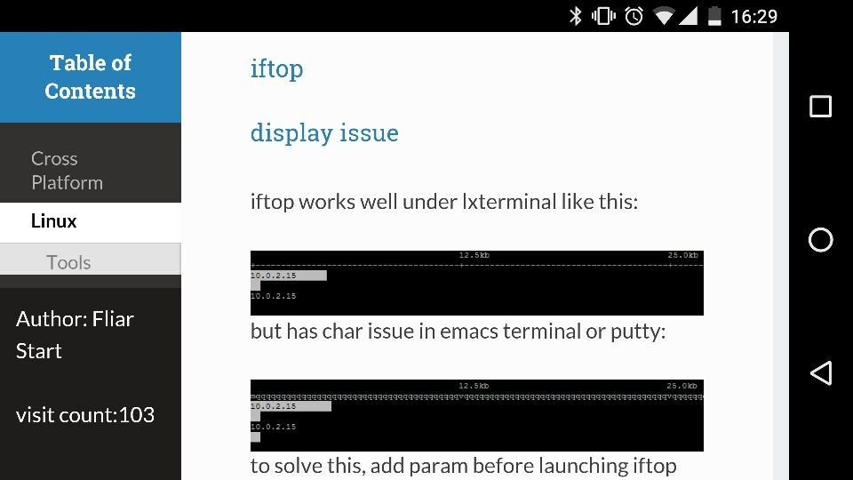

Notes
Table of Contents
Cross Platform
emacs
my installed package
for the record when i need to reinstall emacs
| Package Name | Description |
|---|---|
| ahk-mode | auto hot key script mode, windows only |
| async | c? |
| cmake-mode | cmake mode |
| company | company mode |
| flymake-lua | |
| helm | helm mode |
| helm-company | helm interface for company |
| helm-core | |
| helm-flymake | |
| helm-gtags | helm interface for gnu global |
| helm-swoop | |
| htmlize | html coloring for org export |
| ivy | c? |
| lua-mode | editing lua |
| multi-term | terminal inside emacs |
| org | i'm writing this with org mode |
| popup | c? |
| swiper | c? |
org-mode
local variables block
init in-buffer variables:
# Local Variables: # eval: (setq-local aabbcc t) # End:
this block need putting at eof, within 3000 chars.
- m-x revert-buffer to reload modifications
- this block will be evaluated on loading
sub/super scripts
- '^' "_" are used to indicate super- and subscripts.
- by default the following chars will be treated as sub/superscripts:
NCURSES_NO_UTF8_ACS will be converted to NCURSESNO_UTF8_ACS
this is sometimes annoying. to prevent this, add these variables:
(setq-local org-use-sub-superscripts '{}) ;sub/superscripts must be wrapped with {} (setq-local org-export-with-sub-superscripts '{}) ; so are the export scripts
line break export
simply appent "\\" to end of line:
- type "<s" then <tab> to insert a source block. \\ usually a c-g is required to quit company auto completion.
insert BEGIN block: easy template
- type "<s" then <tab> to insert a source block.
usually a c-g is required to quit company auto completion. - for more easy template: click here
customize source block style
create a css for src:
pre.src { font-family: sans-serif; font-size: 95%; color: #93a1a1; background-color: #002b36; padding: 2px; border: #a7a7a7 1px solid; line-height: 120% } div.src { border: #a7a7a7 1px solid; background-color: #002b36; padding: 2px; overflow: auto; } div.src { font-family: sans-serif; font-size: 95%; color: #93a1a1; padding: 0px; line-height: 120%; margin: 0px; } div.src p { font-family: sans-serif; font-size: 95%; color: #93a1a1; padding: 0px; line-height: 120%; margin: 0px; }
add HTML head to org file
#+HTML_HEAD: <link rel="stylesheet" type="text/css" href="src.css" />
link to external org file headline
- the whole org project must be exported: c-c c-e P x
link syntax(remove comma)
[,[file: name.org ::*headline name][link name]]
headline name should be exact headline name in name.org
- link can be edited with c-c c-l
eval source block and export
make a source block, specifying source and result type
#+BEGIN_SRC sh :result code lsb_release -a
#+END_SRC
c-c c-c to run the source
#+BEGIN_SRC sh :result code lsb_release -a
Distributor ID: Ubuntu Description: Ubuntu 16.04 LTS Release: 16.04 Codename: xenial
#+END_SRC make sure language is loaded in org-babel-do-load-languages
disable eval on export:
#+PROPERTY: header-args+ :eval no-exportor eval will be prompted every time you export
export both source and result: use ":export both" at block header
#+BEGIN_SRC sh :export both lsb_release -a
#+END_SRC or set to header-args
#+PROPERTY: header-args+ :exports both
setting an array variable
(quote (a b c))
(add-hook 'csv-mode-hook
(lambda()
(setq-local csv-separators (quote ("," " "))) ;; comma and tab as separators
))
disable welcome screen
(setq inhibit-splash-screen t) (setq inhibit-startup-message t)
Web Site
fliar.github.io
read the org css fine tune
the mobile view of read the org looks badly like this:
to solve this, change all 300px to percentage(eg.23%), add position, and left to content:
#content{ position:relative; background:#fcfcfc; height:100%; left:23%; /*margin:auto;*/ max-width:75%; min-height:100%; padding:1.618em 3.236em; }
not very well but works:

This web site does not supply ownership informatio
outsourcing css caused this issue, simply move css to github solved this problem
#+HTML_HEAD: <link rel="stylesheet" type="text/css" href="css/htmlize.css"/> #+HTML_HEAD: <link rel="stylesheet" type="text/css" href="css/readtheorg.css"/>
firebase
RESTful API basic:get data
simply using curl, add .json to the url address: print=pretty makes it more readable.
curl 'https://xxxxxx.firebaseio.com/pub.json?print=pretty'{ "error" : "Permission denied" }auth param will bypass the rules for db: for instance, if your db secret is 123 (could be found in settings/database),rules for your db is like this:
"pub": { ".read": false, ".write": false, },when executing:
curl 'https://xxxxxx.firebaseio.com/pub.json?auth=123&print=pretty'{ "001" : 99, "abc" : "aaa" }your data will show as well
VirtualBox
remote desktop for vm
- install virtualbox addon
- enable vrdp by vm -> setting -> display -> enable server
- specify a port number, verify method should be null
- on windows: use mstsc.exe to connect 127.0.0.1:PORT
curl
post form using curl
using -d param and split fields with &:
curl -d "action=download&&id=2&uhash=b" http://www.b.com/dl2.php > a.sav
Linux
Tools
iftop
display issue
iftop works well under lxterminal like this:
 but has char issue in emacs terminal or putty:
but has char issue in emacs terminal or putty:
 to solve this, add param before launching iftop
to solve this, add param before launching iftop
sudo NCURSES_NO_UTF8_ACS=1 iftop
bash
aliased variable not work in sudo command
assuming 'iftop' is aliased to be 'NCURSES_NO_UTF8_ACS=1 iftop' to avoid display issue
this will not work using 'sudo iftop', but 'sudo NCURSES_NO_UTF8_ACS=1 iftop' works.
to fix this, add an alias for 'sudo':
alias sudo='\sudo '
note that there's no space in the equation, the backslash prevents rescursive 'sudo' alias.
Distributions
Ubuntu
shell config: .bashrc
aliases(or put in .bashaliases):
alias iftop="NCURSES_NO_UTF8_ACS=1 iftop"
terminal colors:
export TERM=xterm-256color
global config: /etc/profile
path:
export PATH=$PATH:/usr/local/go/bin
auto run: /etc/rc.local
show version
lsb_release -a
Distributor ID: Ubuntu Description: Ubuntu 16.04 LTS Release: 16.04 Codename: xenial
auto run on startup
- edit /etc/rc.local, add command to run on startup:
nohup sh -c "/home/fliar/downloads/lantern_linux_amd64 -addr 0.0.0.0:8888 &> /dev/null" &> /dev/null exit 0 # last line of rc.local
- note that rc.local should end with a value(exit 0)
default PS1 location (ubt)
~/.bashrc
if [ "$color_prompt" = yes ]; then PS1='${debian_chroot:+($debian_chroot)}\[\033[01;32m\]\u@\h\[\033[00m\]:\[\033[01;34m\]\w\[\033[00m\]\n\$ ' else PS1='${debian_chroot:+($debian_chroot)}\u@\h:\w\n\$ ' fi
installing virtualbox on ubuntu 16.04
- install virtualbox
emacs /etc/apt/sources.list # add the following line w/o comment #deb http://download.virtualbox.org/virtualbox/debian xenial contrib wget -q https://www.virtualbox.org/download/oracle_vbox_2016.asc -O- | sudo apt-key add - sudo apt-get update sudo apt-get install build-essential apache2 libapache2-mod-php virtualbox-5.0
setup user
sudo useradd -d /home/vbox -m -g vboxusers -s /bin/bash vbox #create folder and user sudo passwd vbox #set vbox password sudo emacs /etc/default/virtualbox #set default VBOXWEB_USER & HOST: #VBOXWEB_USER=vbox #VBOXWEB_HOST=127.0.0.1
install virtualbox extpack
sudo vboxmanage extpack install Oracle_VM_VirtualBox_Extension_Pack-5.0.20-106931.vbox-extpack
install phpvirtualbox
unzip phpvirtualbox-5.0-5.zip mv phpvirtualbox-5.0-5 /var/www/html/vbox cd /var/www/html/vbox/ cp config.php-example config.phpconfigure phpvirtualbox(config.php)
/* Username / Password for system user that runs VirtualBox */ var $username = 'vbox'; var $password = 'password';
launch vbox web server
sudo service vboxweb-service stop sudo /sbin/rcvboxdrv setup sudo service vboxweb-service start su vbox -c '/usr/bin/vboxwebsrv'
lightdm auto launch gui app on start
- auto login user
- edit lightdm conf to set login user
/etc/lightdm/lightdm.confor/etc/lightdm/lightdm.conf.d/12-autologin.conf
in [SeatDefaults] section, set default login user:
autologin-user=user
- edit lightdm conf to set login user
- launch before user login
- edit lightdm conf to set script to run after display setup
in [SeatDefaults] section, set script:
display-setup-script=/etc/lightdm/autorun.sh
edit autorun.sh to add app
#! /bin/bash exec leafpad & # modify to your app
Debian
VirtualBox addon installation
- use root or add your account to super user
follow this shell
sudo apt-get update sudo apt-get dist-upgrade sudo apt-get install build-essential module-assistant cd /media/cdrom0 sudo bash VBoxLinuxAdditions.run
Installing Virtualbox w/o GUI
- install apache & php
sudo apt-get install libapache2-mod-php5 apache2
install virtualbox
# deb package install will fail, use apt emacs /etc/apt/sources.list # add the following line w/o comment, note the debian version name # deb http://download.virtualbox.org/virtualbox/debian jessie contrib wget -q https://www.virtualbox.org/download/oracle_vbox_2016.asc -O- | sudo apt-key add - # add apt key sudo apt-get update sudo apt-get install virtualbox-5.0
setup user & group
sudo groupadd vboxusers #create user group sudo useradd -d /home/vbox -m -g vboxusers -s /bin/bash vbox #create folder and user sudo passwd vbox #set vbox password sudo emacs /etc/default/virtualbox #set default VBOXWEB_USER & HOST: #VBOXWEB_USER=vbox #VBOXWEB_HOST=127.0.0.1
install virtualbox extpack
sudo vboxmanage extpack install Oracle_VM_VirtualBox_Extension_Pack-5.0.20-106931.vbox-extpack
install phpvirtualbox
unzip phpvirtualbox-5.0-5.zip mv phpvirtualbox-5.0-5 /var/www/html/vbox cd /var/www/html/vbox/ cp config.php-example config.phpconfigure phpvirtualbox(config.php)
/* Username / Password for system user that runs VirtualBox */ var $username = 'vbox'; var $password = 'password';
launch vbox web server
sudo -u vbox vboxwebsrv -b &>> /dev/null # -b:daemon, discard output, this will not work on ubuntu 16.04 sudo pkill vboxwebsrv # kill if needed
Mounting smb folder
sudo mount -t cifs -o user=fliar //192.168.111.111/dl /mnt/111dl/
CentOS
distcc installation on centos 6.7
install prerequisities
yum install automake yum install gcc yum install gcc-c++ yum install python-devel adduser distcc iptables -F # Centos block all ports except 22
install
chmod +x autogen.sh ./autogen.sh ./configure make make install
check prerequisities if failure encountered
- slave:
launch daemon
distccd --daemon -a 192.168.1.0/8 -j 2 --user distcc # max job 2, default user is distcc # allow 192.168.1.x to use this slave
- master:
add hosts to config
192.168.1.88/8 # max job 8, 4 by default 192.168.1.22/1 192.168.1.23/1 192.168.1.21/1
set variables(bashrc)
# distcc DISTCC_VERBOSE=0 DISTCC_LOG="/home/util/distcc.log" export DISTCC_VERBOSE DISTCC_LOG
set CXX/CC to "distcc"
env = Environment( ENV = os.environ, CPPPATH = listinc, LIBPATH = '/usr/lib', CCFLAGS = releasecflags, CXX='distcc g++',)
monitor building status
distccmon-text 2 # update per 2 second
ntp for time update
install ntp
yum install ntp
- setup config
- add server to config
restric source
restrict 2.cn.pool.ntp.org restrict 0.asia.pool.ntp.org restrict 3.asia.pool.ntp.org server 2.cn.pool.ntp.org prefer server 0.asia.pool.ntp.org server 3.asia.pool.ntp.org
start ntp daemon
/etc/init.d/ntpd start
check ntp status
ntpstat
Windows
Tools
Auto Hot Key
nested if statement
nested if is not allowed in ahk script:
if a { if b { ... } }
you can wrap it to another function:
fb(b) { if b { ... } } if a { fb(b) }
cygwin
default PS1 location
/etc/bash.bashrc
# Set a default prompt of: user@host and current_directory PS1='\[\e]0;\w\a\]\n\[\e[32m\]\u@\h \[\e[33m\]\w\[\e[0m\]\n\$ '
Mac
System
Finder
enable/disable .DS_Store
.DS_Store is a file that stores custom attributes of its containing folder. the name is an abbreviation of Desktop Services Store to enable/disable it, execute these commands in terminal
Disable
defaults write com.apple.desktopservices DSDontWriteNetworkStores -bool TRUE
Enable
defaults delete com.apple.desktopservices DSDontWriteNetworkStores